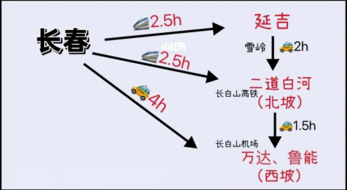
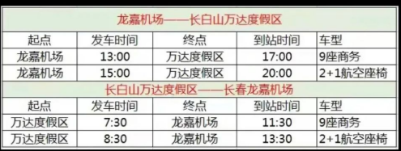

国家AAAAA级景区 • 中华十大名山之一
答应我！这个冬天一定要去趟长白山⛰️
去长白山，真的只有零次和无数次…
去滑滑粉雪，体验零下二十度的雾凇漂流
去2600米的高山看冰封天池
去林海雪原徒步、坐马拉雪橇、喂麋鹿
去大雪纷飞的户外泡火山温泉
快来吧，攻略我都帮你准备好了！！！
不管是想要滑雪还是看雪。冬天来长白山的最佳时间都要1月中旬之同千万不要来早了，太早根本没有雪
1 西玻对应的是松江河镇，万达和鲁能滑雪场在这里，近长白山机场✈️,两个度假区都有大巴接送，重点是滑雪首选这里
2 北坡对应的是二道白河镇，有北坡天池和魔界漂流，近长白山高铁站🚅，如果只想看雪就选这
方案1： 长白山机场是到达的最佳方式，但是直飞航班少
方案2： 先到达长春龙嘉机场，再换乘高铁到延吉或者北坡，长春航班多、价格也有优势
方案3：到达延吉朝阳川机场，一路从延吉一北坡一西坡
1可选拼车或包车，拼车人均200，包车700起(仅供参考)
✔️万达度假区雪道多，有9家酒店，是一个小型的度假小镇，吃、住、玩都很方便，配套齐全，距离松江河镇20分钟
✔️鲁能度假区雪道少，有4家酒店拍照好看，被称为小瑞士，但比较偏僻，美食荒芜，距离松江河镇40分钟
✔️北坡可以选择皇冠假日，酒店的火山》温泉很值得体验，也很适合亲子旅行；在之禾、觅谷、池北水色也都各具特色；平价的有桔子酒店、全季、民宿等等
🎫首先入住万达或鲁能度假区酒店都会包含雪 票，雪票包含雪板、雪鞋、头盔这三大件，不需要 额外租
❗️其他的全部装备都可以直接租，雪服雪场可租60,雪镜40，但统一款式不适合拍照，护具、手套只卖不租
🙋某宝【阿拉丁长白山滑雪服租赁】全套下来190,款式多、好看还出片，酒店送取很方便自己需要提前准备速干衣、毛线帽、护脸、雪袜🧦,这四个小件除了护脸以外其他都是非必备 项，有了算是锦上添花
1天池
分东、南、西、北四个坡，东坡在朝鲜境内去不了，南坡只有夏天才开，西北坡冬天可去；冬季首选北坡，可坐车直达且景点多，注意保暖！
2漂流
西坡天池水和原生态，下雪后以雪淞景观最为著名；北坡魔界漂流，早起看雾淞，需要12月后温度低于零下二十且无风的早上去
⚠️雾淞是自然景观，取决于每日的温度和风力,离哪近去哪，下雪后都好看
3温泉
西坡住鲁能去天沐温泉，住万达有赠送汉拿山温泉，住北坡可以选择皇冠假日火山温泉；室外温泉可以体验冰火两重天，如果赶上下雪体验更好
4雪岭/老里克湖(12月-2月)
两个景区距离一公里，景色都差不多，建议二选很天然的雪景，可以喂麋鹿、坐马拉雪橇，这两个景点留在延吉往返二道白河的途中去
5雪地摩托（12月-2月)
在长白山的林海雪原感受速度与激情，全程自驾但有教练领队，不用担心变绝问题，体验感十足，也是来长白山不能错过的游玩项目
6冰上垂钓(12月中-2月)
这是只有在东北才能体验到的乐趣，在凿好的冰窟窿上下鱼饵，钓到的鱼还可以烤了吃，很适合带娃的小伙伴
7雪屋火锅（12月中-2月)
在砌好的雪屋里吃火锅也是很东北的打开方式，当夜幕降临配上烟花和篝火，相信我这一定是很难忘的一次体验
8延吉
如果你的时间充裕可以选择在延吉停留1-2天，延吉很小却是一个美食宝藏地，如果你也喜欢美食， 那么这里一定值的你不远千里
💰️🎫🙋🧦⛰️🌧️🔷🏨🚅✈️❗️⚠️📍🔷上半身穿搭：保暖打底十加绒/毛衣/卫衣十中长款羽绒服
🔷下半身穿搭：保暖打底十500g以上棉裤+加绒外裤
🔷鞋子：中长筒防滑防水棉靴十加绒袜/羊毛袜
🔷帽子、耳包、围巾《、手套、暖宝宝 贴、保暖杯、墨镜、泳衣、薄睡衣（室内很暖）
1长白山地广人稀，出行都比较远，尽量选择拼车或包车，冬天路滑且多为山路，不建议自驾
2每年12月10号-2月20号是旺季，酒店会涨价早订更划算
3很多景点和游玩都有优惠价找靠谱的渠道🙋，天池门票只能官网买，不用当天可退
4吃饭提前看好网评，东北菜量很大，铁锅炖一订要尝尝，还有糖葫芦
5东北冬天很干燥除必须的护肤品外面膜、唇膏、身体乳、护手霜都要带齐
6应急药品要提前准备好，临时去买很不方便
7充电宝随身携带，手机天冷很容易冻关机，可以在背面贴个暖宝宝